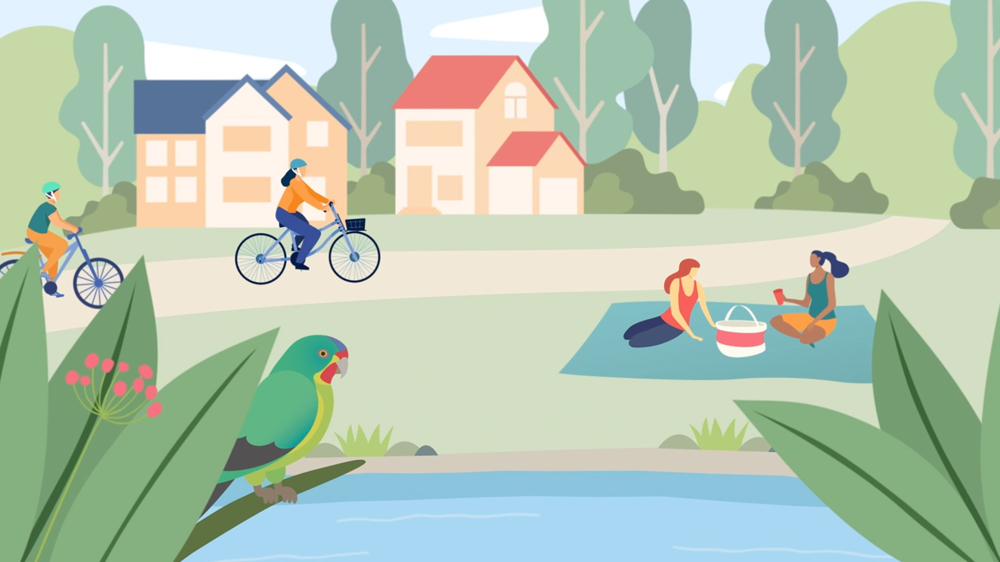
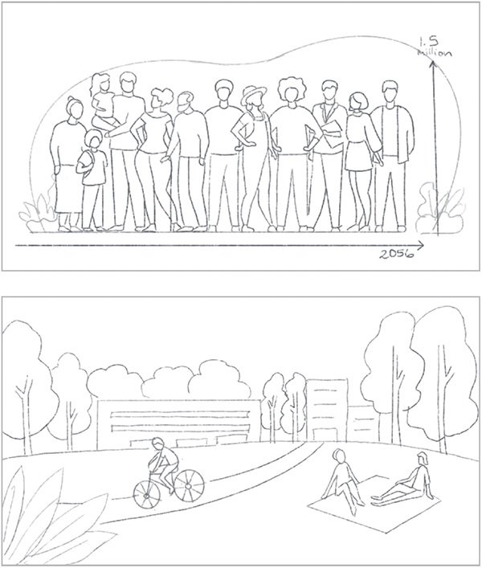

Government · Environment
Cumberland Plain Conservation Plan
Two animations that explain a Western Sydney conservation plan to residents, not planners.
The challenge
The Cumberland Plain Conservation Plan sets out how urban growth across Western Sydney can proceed alongside protection for the region's native environment. A lot rides on it: koala habitat, native plants and animals, and public trust that development and conservation are not a contradiction.
The approach
The brief was to turn dense policy into something people would watch and understand. Working from the plan's technical detail, I led concept development, storyboards, illustration and animation. The language and imagery were built for a general audience, not planners.
What was delivered
Two flagship animations that explain how growth and conservation can work together, plus shorter cut-downs that carried the same story to social platforms without losing the substance underneath.

